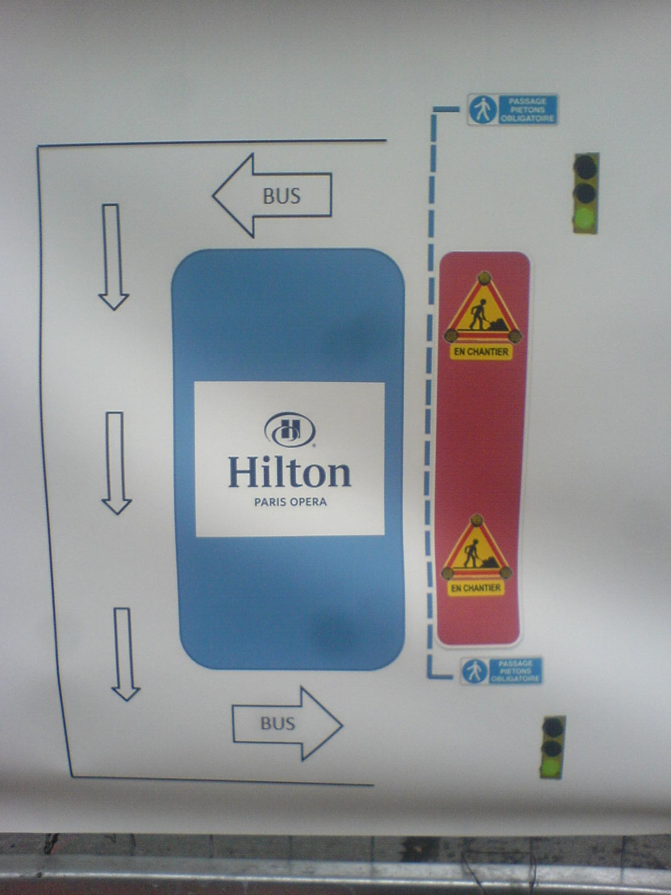
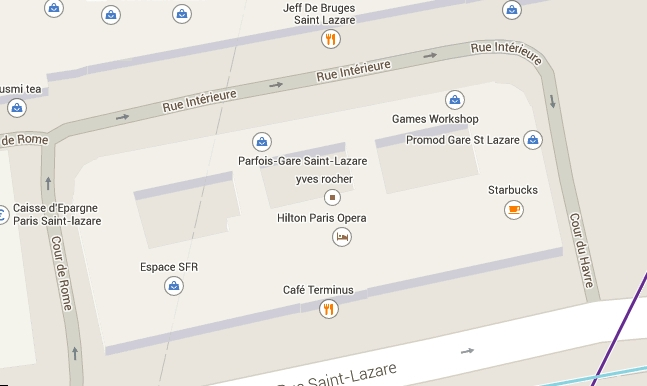

Icons are icons. The Hilton Hotel is an icon. A token-icon, in the sense that there is only one Hilton brand around. The smartphone is an icon: a generic icon, as there are many different brands of smartphones. Diversity in the case of smartphone cancels out because of function: as one needs an object that can support both holding and reading on screen, the design of shape converges on a rectangle with rounded angles.
 Accidents happen. The Hilton Paris Opera Hotel at Gare St. Lazare in Paris, as seen from above, or on a map, has (almost) the shape of a rectangle with rounded angles. Roadwork around the Hilton disrupts the circulation. Signs are posted to help pedestrians find their way. On those signs, the Hilton rectangle is represented by an icon that further simplifies its shape – and is actually the globalized smartphone icon. We witness an interesting and so far poorly documented phenomenon, accidental icon capture. With consequences: The three internal courtyards of the Hilton are reduced to one, and turned into the smartphone’s screen.